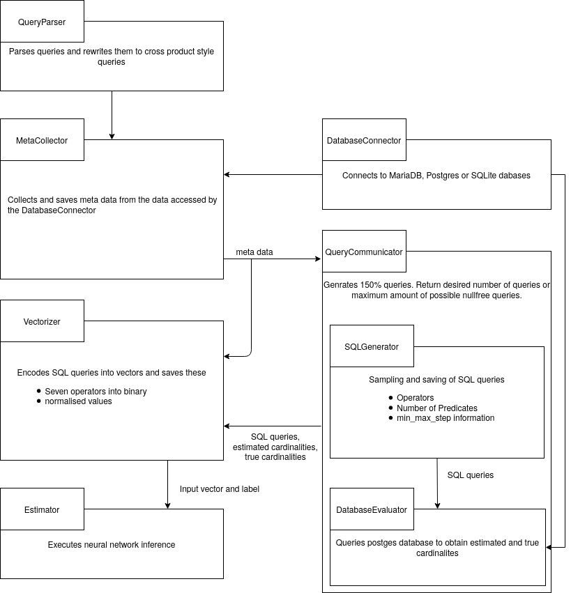

Local Cardinality Estimation (See [1])
The complete documentation can be found here.
-
The submodule 'meta-collector' collects the several informations from the requested table and saves the information into a .json file
-
The submodule 'sql-generator' uses the output of the meta-collector to create random SQL-Queries with the corresponding schema
-
The submodule 'vectorizer' uses the output of the sql-generator to encode it into a vectors
-
The submodule 'estimator' takes the encoded vectors and uses them on a neural network
-
The submodule 'postrgres-evaluator' takes the sql-queries and executes them on the postgres-database to get the true cardinality

For building the Documentation you need to execute the setup_doc.sh. This script installs the prerequisites if not already installed, builds the documentation and starts the documentation-server.
References
[1] Woltmann et al., Cardinality estimation with local deep learning models, aiDM@SIGMOD 2019
[2] Woltmann et al., Aggregate-based Training Phase for ML-based Cardinality Estimation, BTW 2021
[3] Woltmann et al., Machine Learning-based Cardinality Estimation in DBMS on Pre-Aggregated Data, arXiv 2020
Cite
Please cite our papers if you use this code in your own work:
@article{woltmann2019localdeep,
title = {Cardinality estimation with local deep learning models},
author = {Woltmann, Lucas and Hartmann, Claudio and Thiele, Maik and Habich, Dirk and Lehner, Wolfgang},
booktitle = {Proceedings of the Second International Workshop on Exploiting Artificial Intelligence Techniques for Data Management},
series = {aiDM@SIGMOD '19},
year = {2019}
}
@article{woltmann2021aggregate,
title={Aggregate-based Training Phase for ML-based Cardinality Estimation},
author={Woltmann, Lucas and Hartmann, Claudio and Habich, Dirk and Lehner, Wolfgang},
journal={BTW 2021},
year={2021},
publisher={Gesellschaft f{\"u}r Informatik, Bonn},
pages = {135-154},
doi = {10.18420/btw2021-07}
}
@article{woltmann2020cube,
title={Machine Learning-based Cardinality Estimation in DBMS on Pre-Aggregated Data},
author={Woltmann, Lucas and Hartmann, Claudio and Habich, Dirk and Lehner, Wolfgang},
journal={arXiv preprint arXiv:2005.09367},
year={2020}
}